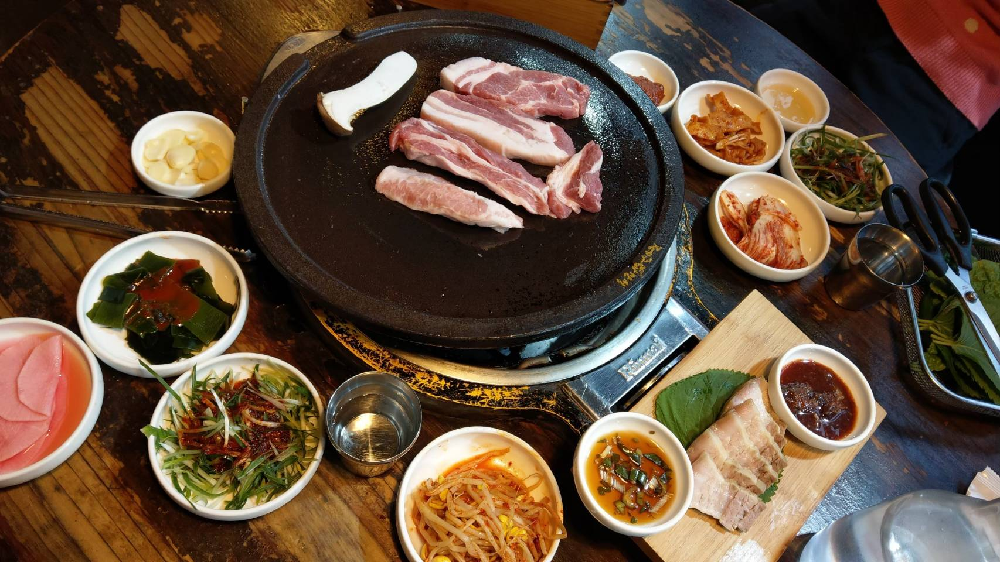

I would like to share one of my interesting travel experience here. In the winter vacation at 2019, I went to Korea with my sister. What made this travel special is that it was the first time I went abroad without joining a tourist group.
It was cold in Korea at that time, and even I saw snow. I observed a fun thing there on the street. That is, all Koreans wear long down jacket in the winter. And, my sister and I think it was interesting.
At the first day we went there, an accident happened. We could not find the hotel we booked. We went to the place located on Google Map, but there was no hotel nearby. Luckily, I’ve learned a little Korea, so I found that the map in that hotel’s website is different from Google Map. Finally, we found the correct place. My sister and I were nervous at that moment and it was quite a special experience I’ve never forgotten.

Though the accident shocked us, we still had a good time in Korea. The best thing I love in Korea is the food. There is various delicious food in Korea. I’d like to introduce three foods you must eat in Korea. First is Tteokbokki, spicy rice cake. The taste of Tteokbokki in Korea is different from the one I’ve ever tasted in Taiwan. The sauce is quite delicious and it is not very spicy but a little sweet. Second is roast pork belly. I am a person who hates fat. But, the taste of roast pork belly changed my thought on fat. You can try the roast pork with lettuce and it can lower the greasy taste. The last but the least, Fried chickens are the food you can’t pass. In addition to the delicious taste, the best part of fried chicken is that you only need to order it by phone, and the couriers will deliver fried chicken in front of your door. These three foods you must try if you travel to Korea.